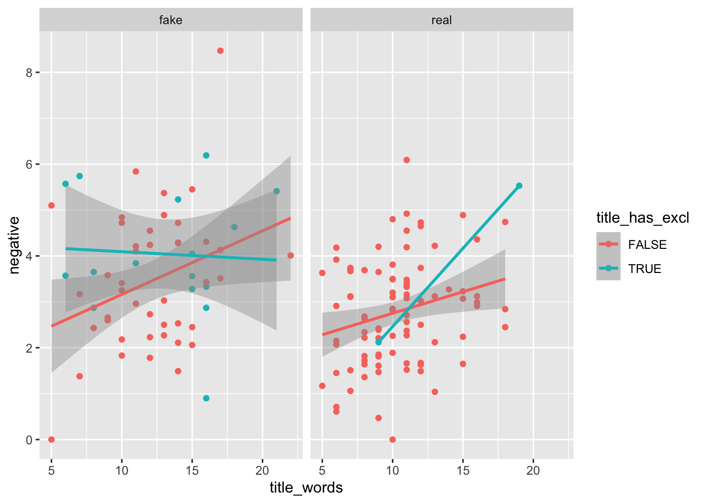
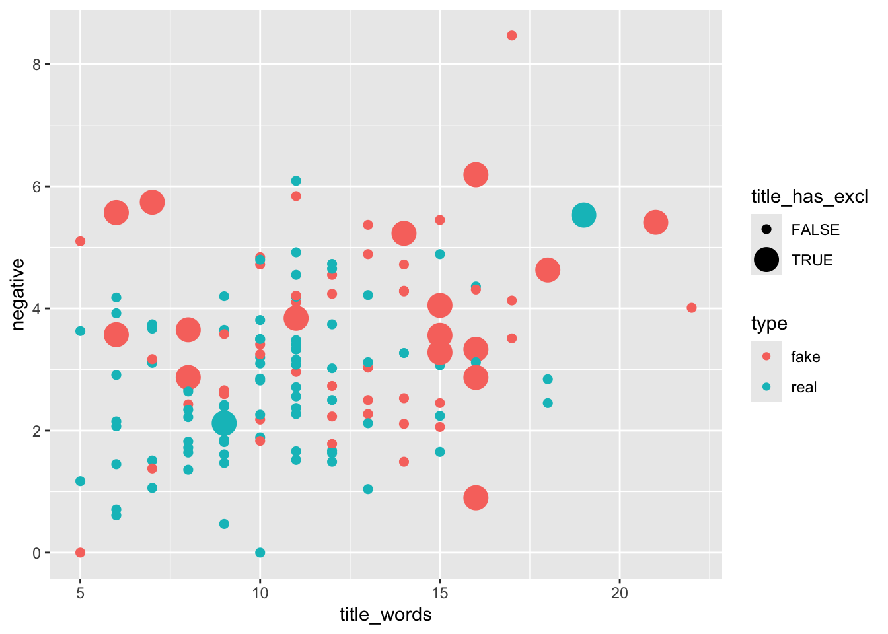
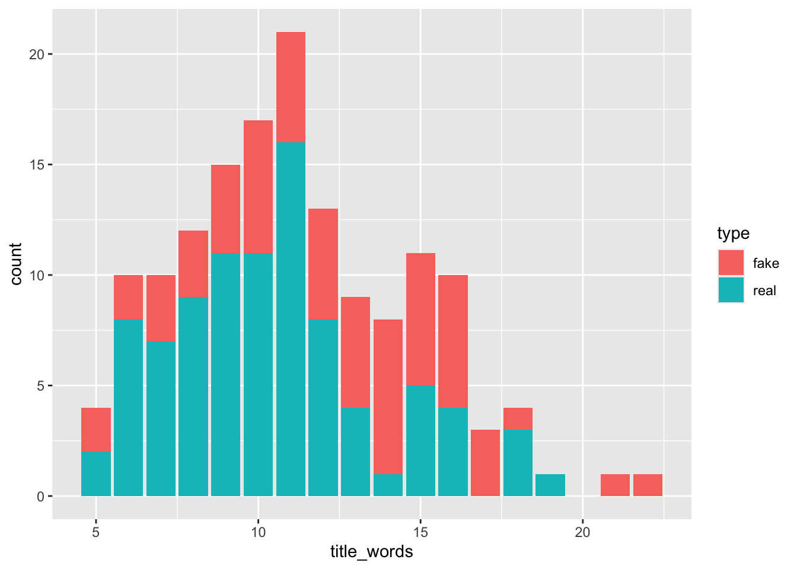
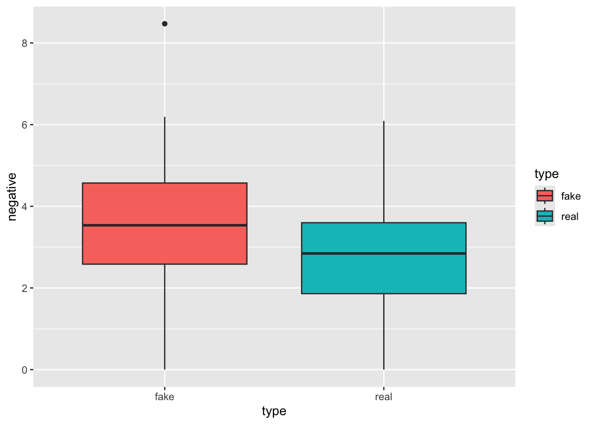
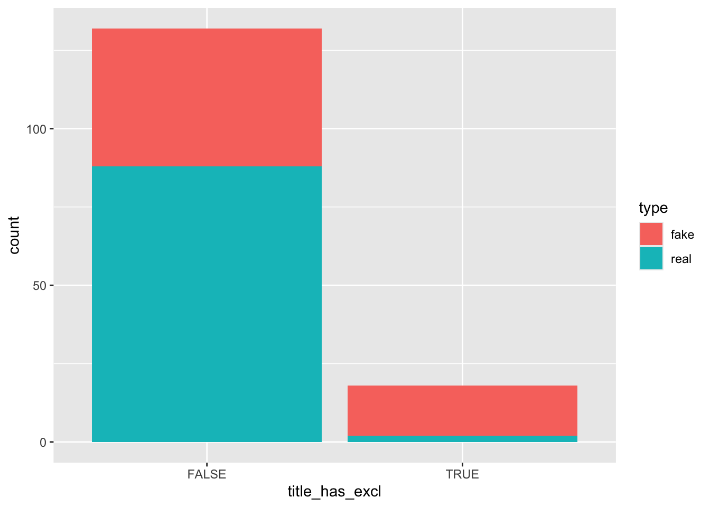
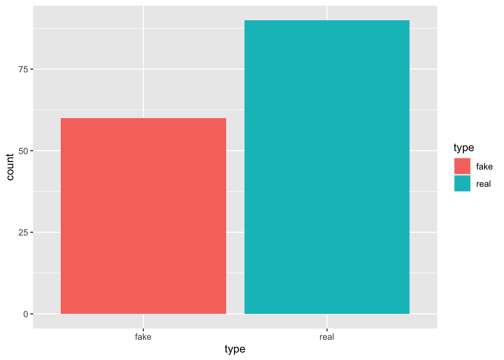

library(bayesrules)
library(tidyverse)
library(e1071)
library(janitor)Naive Bayes Classification Assignment
Assignment Description
This assignment is designed to test your knowledge of Naive Bayes Classification. It closely mirrors our naive_bayes_penguins.qmd from lectures 10/1 and 10/3. We reflect back on the true vs fake news dataset from the beginning of the semester and apply the new skills in our bayesian toolbox.
This assignment is worth 16 points and is due by 10:00am on October 15th. Each section has a number of points noted. To turn in this assignment, render this qmd and save it as a pdf, it should look beautiful. If you do not want warning messages and other content in the rendered pdf, you can use message = FALSE, warning = FALSE at the top of each code chunk as it appears in the libraries code chunk below.
Load Libraries
Read in data
data(fake_news)Challenge
Exercise 14.7 Fake news: three predictors
Suppose a new news article is posted online – it has a 15-word title, 6% of its words have negative associations, and its title doesn’t have an exclamation point. We want to know if it is fake or real
Visualization (Exploratory Data Analysis) - 2 points
Below, insert a code chunk(s) and use ggplot to visualize the features of the data we are interested in. This can be one or multiple visualizations
Type (fake vs real) type
Number of words in the title (numeric value) title_words
Negative associations (numeric value) negative
Exclamation point in the title (true vs false) title_has_excl
colnames(fake_news) [1] "title" "text"
[3] "url" "authors"
[5] "type" "title_words"
[7] "text_words" "title_char"
[9] "text_char" "title_caps"
[11] "text_caps" "title_caps_percent"
[13] "text_caps_percent" "title_excl"
[15] "text_excl" "title_excl_percent"
[17] "text_excl_percent" "title_has_excl"
[19] "anger" "anticipation"
[21] "disgust" "fear"
[23] "joy" "sadness"
[25] "surprise" "trust"
[27] "negative" "positive"
[29] "text_syllables" "text_syllables_per_word"message = FALSE
warning = FALSE
ggplot(data = fake_news, aes(title_words, negative, color = title_has_excl)) +
geom_point() +
geom_smooth(method = "lm") +
facet_grid(~type)`geom_smooth()` using formula = 'y ~ x'Warning in qt((1 - level)/2, df): NaNs producedWarning in max(ids, na.rm = TRUE): no non-missing arguments to max; returning
-Inf
ggplot(data = fake_news, aes(x = title_words, y = negative, color = type, size = title_has_excl)) +
geom_point()Warning: Using size for a discrete variable is not advised.
title_words
ggplot(data = fake_news, aes(x = title_words, fill = type)) +
geom_bar() 
negative
ggplot(data = fake_news, aes(x = type, y = negative, fill = type)) +
geom_boxplot()
title_has_excl
ggplot(data = fake_news, aes(x = title_has_excl, fill = type)) +
geom_bar()
type
ggplot(data = fake_news, aes(x = type, fill = type)) +
geom_bar()
Interpretation of Visualization - 2 points
Below, write a few sentences explaining whether or not this new news article is true or fake solely using your visualization above
After creating 2 visualizations including all variables and 4 visualizations for each variable individually, considering a new news article (a 15-word title, 6% of its words have negative associations, and its title doesn’t have an exclamation point), it is challenging to predict if the article is true or fake. After looking at these visualizations collectively, I make the prediction that the article is fake. This is largely due to the variables title_words and negative. Another factor that would be helpful in this stage would be looking at feature importance to weigh the importance of each variable to make a more informed prediction.
Perform Naive Bayes Classification - 3 points
Based on these three features (15-word title, 6% of its words have negative associations, and its title doesn’t have an exclamation point), utilize naive Bayes classification to calculate the posterior probability that the article is real. Do so using naiveBayes() with predict().
Below, insert the code chunks and highlight your answer
naive_model_hints <- naiveBayes(type ~ title_words + negative + title_has_excl, data = fake_news)our_article <- data.frame(title_words = 15, negative = 6, title_has_excl = "FALSE")predict(naive_model_hints, newdata = our_article, type = "raw") fake real
[1,] 0.8775779 0.1224221Posterior probability that the article is real = 0.1224221
fake_news <- fake_news %>%
mutate(predicted_article = predict(naive_model_hints, newdata = .))fake_news %>%
tabyl(type, predicted_article) %>%
adorn_percentages("row") %>%
adorn_pct_formatting(digits = 2) %>%
adorn_ns type fake real
fake 48.33% (29) 51.67% (31)
real 12.22% (11) 87.78% (79)naive_model_hints
Naive Bayes Classifier for Discrete Predictors
Call:
naiveBayes.default(x = X, y = Y, laplace = laplace)
A-priori probabilities:
Y
fake real
0.4 0.6
Conditional probabilities:
title_words
Y [,1] [,2]
fake 12.31667 3.743884
real 10.42222 3.204554
negative
Y [,1] [,2]
fake 3.606333 1.466429
real 2.806556 1.190917
title_has_excl
Y FALSE TRUE
fake 0.73333333 0.26666667
real 0.97777778 0.02222222Break Down the Model - 5 points
Similar to the penguins example, we are going to break down the model we created above. To do this we need to find:
- Probability(15 - word title| article is real) using
dnorm()
fake_news %>%
tabyl(type) type n percent
fake 60 0.4
real 90 0.6dnorm(15, mean = 10.42222, sd = 3.204554)[1] 0.04487606probs_15_real <- 0.04487606
probs_15_real[1] 0.04487606Probability(15 - word title| article is real) = 0.02692564
- Probability(6% of words have negative associations | article is real) using
dnorm()
dnorm(6, mean = 2.806556, sd = 1.190917)[1] 0.00919695fake_news %>%
tabyl(type) type n percent
fake 60 0.4
real 90 0.6probs_negative_real <- 0.00919695
probs_negative_real[1] 0.00919695Probability(6% of words have negative associations | article is real) = 0.00551817
Probability(no exclamation point in title | article is real)
- Multiply these probabilities and save as the object
probs_real
- Multiply these probabilities and save as the object
fake_news %>%
tabyl(type, title_has_excl) %>%
adorn_percentages("row") type FALSE TRUE
fake 0.7333333 0.26666667
real 0.9777778 0.02222222probs_noexcl_real = 0.9777778Probability(no exclamation point in title | article is real) = 0.9777778
probs_real = (90/150) * probs_15_real * probs_negative_real * probs_noexcl_real
probs_real[1] 0.0002421308Probability real = 0.00008716707
Now, looking at when an article is fake
- Probability(15 - word title| article is fake) using
dnorm()
fake_news %>%
tabyl(type) type n percent
fake 60 0.4
real 90 0.6dnorm(15, mean = 12.31667, sd = 3.743884)[1] 0.08242154probs_15_fake <- 0.08242154
probs_15_fake[1] 0.08242154Probability(15 - word title| article is fake) = 0.03296862
- Probability(6% of words have negative associations | article is fake) using
dnorm()
fake_news %>%
tabyl(type) type n percent
fake 60 0.4
real 90 0.6dnorm(6, mean = 3.606333, sd = 1.466429)[1] 0.07179166probs_negative_fake <- 0.07179166
probs_negative_fake[1] 0.07179166Probability(6% of words have negative associations | article is fake) = 0.02871666
Probability(no exclamation point in title | article is fake)
- Multiply these probabilities and save as the object
probs_fake
- Multiply these probabilities and save as the object
fake_news %>%
tabyl(type, title_has_excl) %>%
adorn_percentages("row") type FALSE TRUE
fake 0.7333333 0.26666667
real 0.9777778 0.02222222probs_noexcl_fake = 0.7333333Probability(no exclamation point in title | article is fake) = 0.7333333
probs_fake = (60/150) * probs_15_fake * probs_negative_fake * probs_noexcl_fake
probs_fake[1] 0.001735706Probability fake = 0.0002777129
Lastly divide your probs_real by the sum of probs_real and probs_fake to see if you can reproduce the output from naiveBayes() above
sum_probs = probs_real + probs_fakeoutput = probs_real / sum_probs
output[1] 0.122422Confusion Matrix - 2 points
Calculate a confusion matrix by first mutating a column to fake_news called predicted_type . Then, use tabyl() to create the matrix
fake_news <- fake_news %>%
mutate(predicted_type = predict(naive_model_hints, newdata = .))fake_news %>%
tabyl(type, predicted_type) %>%
adorn_percentages("row") %>%
adorn_pct_formatting(digits = 2) %>%
adorn_ns type fake real
fake 48.33% (29) 51.67% (31)
real 12.22% (11) 87.78% (79)How can our model be improved? - 2 points
Think about the results of the confusion matrix, is the model performing well? Try creating a new model that uses all of the features in the fake_news dataset to make a prediction on type (fake vs true). Then, create a new confusion matrix to see if the model improves.
Looking at the above correlation matrix, we can see that the model preformed the best when analyzing real news, and the worst when looking at fake articles.
naive_model_all <- naiveBayes(type ~ ., data = fake_news)fake_news <- fake_news %>%
mutate(predicted_all = predict(naive_model_all, newdata = .))fake_news %>%
tabyl(type, predicted_all) %>%
adorn_percentages("row") %>%
adorn_pct_formatting(digits = 2) %>%
adorn_ns type fake real
fake 96.67% (58) 3.33% (2)
real 3.33% (3) 96.67% (87)It can be seen that when incorporating all variables, the performance of the model greatly improves.
probs_15_real[1] 0.04487606probs_negative_real [1] 0.00919695probs_noexcl_real[1] 0.9777778